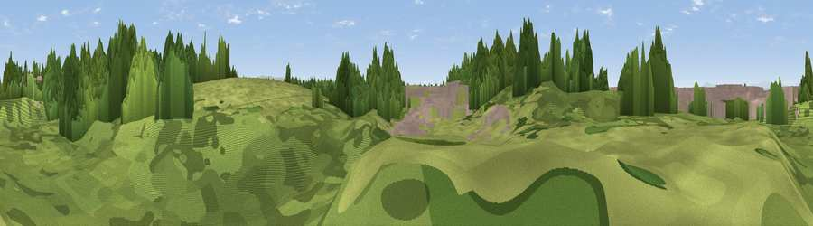

Viewpoint near Heysham
#46092 in England · top 100% of its area beats it · near Heysham · access?Where it is
The exact computed spot (SD 40772 60044). Click the marker for map links.
Public access: no public right of way or access land is recorded at this exact spot — it may be on private land. Computed from Natural England's CRoW access layer and OpenStreetMap rights of way — not the legal definitive map. Always verify locally.
The view, rendered

A 360° render of this exact spot computed from the terrain model, tree cover and land cover — summer colours, afternoon light, calibrated against photographs of famous viewpoints. Real trees, hedges and buildings will differ in detail.
The panorama
Grey silhouette: terrain skyline in each direction (720 bearings, Earth curvature and refraction included). Dashed green: skyline with trees (+15 m) and buildings (+8 m) as obstacles. Blue strip: how far the ground is visible on each bearing.
Where the view opens
Wedge length = distance to the farthest visible ground on that bearing (vegetation-aware). Rings at 10, 25 and 50 km.
What fills the view
47% woodland · 38% grassland · 16% built-up
Angular shares of the visible panorama (visual magnitude), not map area. Landscape diversity 0.44 (0–1 Shannon).
Key numbers
More beautiful places nearby
The staircase of upgrades: each row has a higher view potential than everything closer. Driving times are estimates from straight-line distance, calibrated against real road routing — check an actual route before setting out.
| Place | Direction | Drive | Score |
|---|---|---|---|
| Viewpoint near Heysham | N · 1 km | ~4 min | 59.9 |
| Higher Heysham | NE · 2 km | ~5 min | 64.3 |
| Viewpoint near Lancaster | E · 8 km | ~16 min | 66.7 |
| Viewpoint near Bailrigg | E · 9 km | ~17 min | 74.4 |
| Viewpoint near Quernmore | E · 13 km | ~24 min | 77.7 |
| Viewpoint near Quernmore | E · 14 km | ~25 min | 78.0 |
| Warton Crag | NNE · 15 km | ~27 min | 83.2 |
| Viewpoint near Grange-over-Sands | N · 18 km | ~31 min | 83.4 |
54.03297, -2.90575 · source: osm viewpoint · position refined by local search. Computed location — check access rights before visiting.